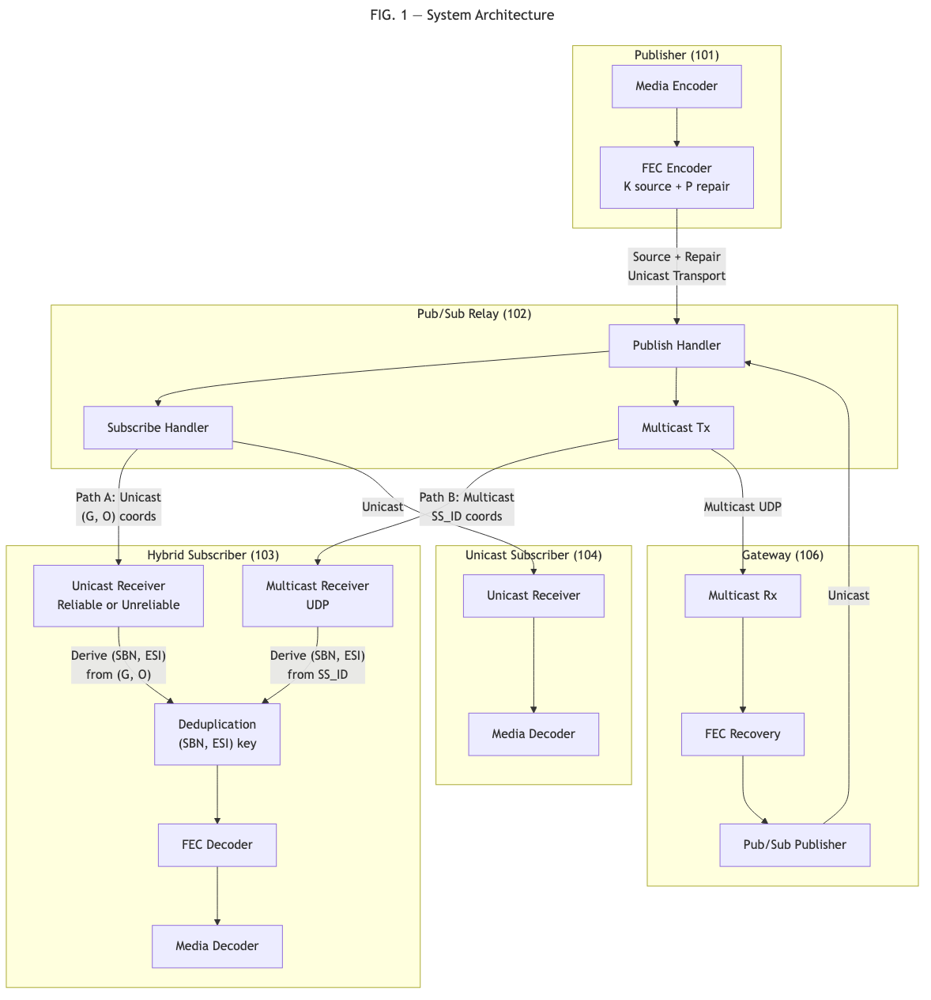
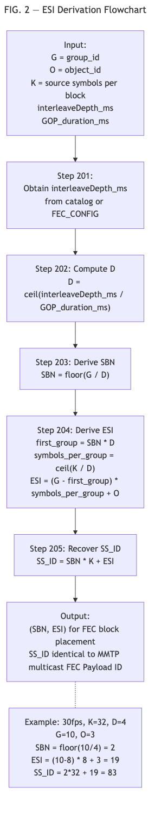
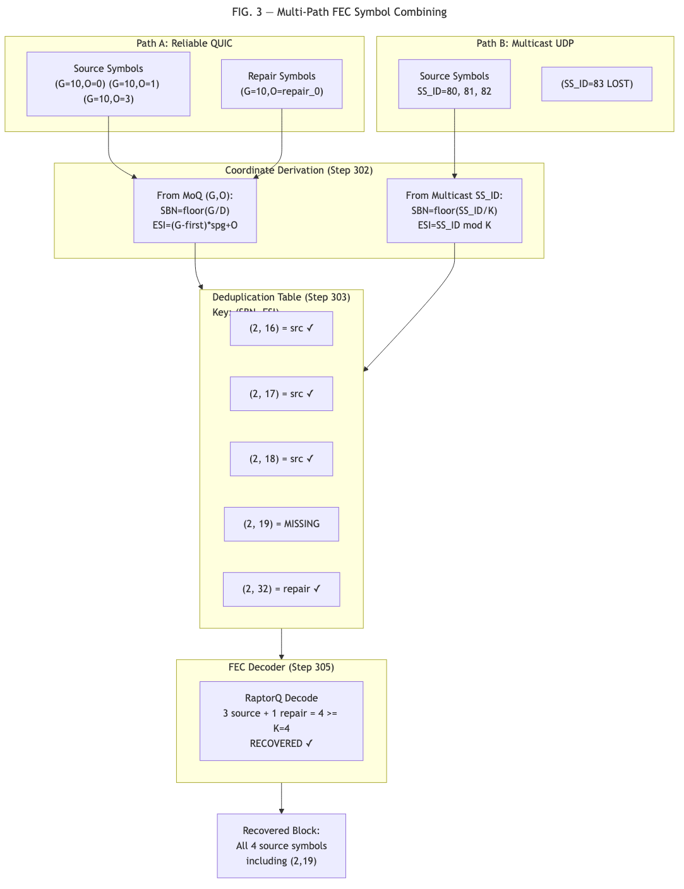
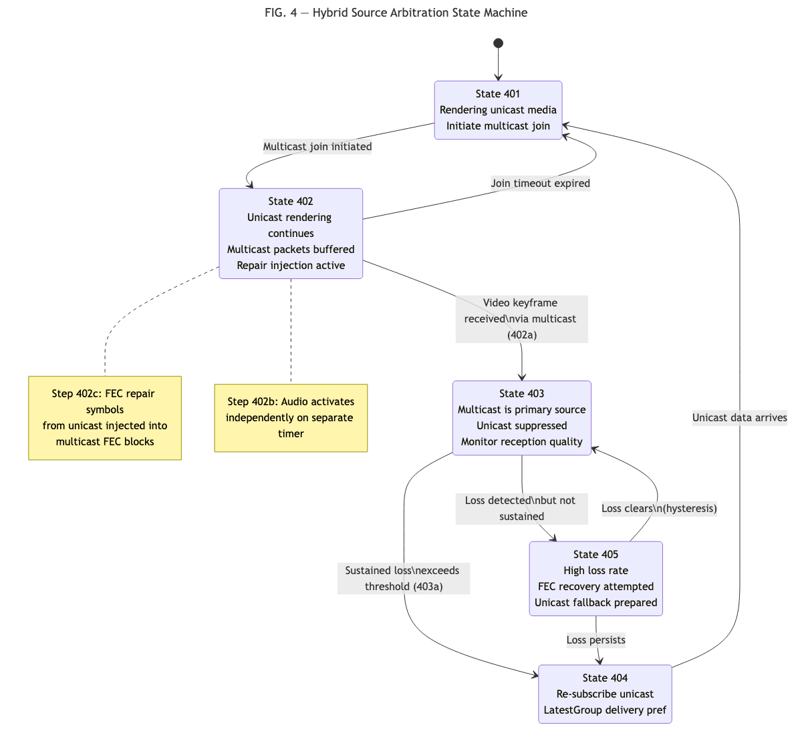
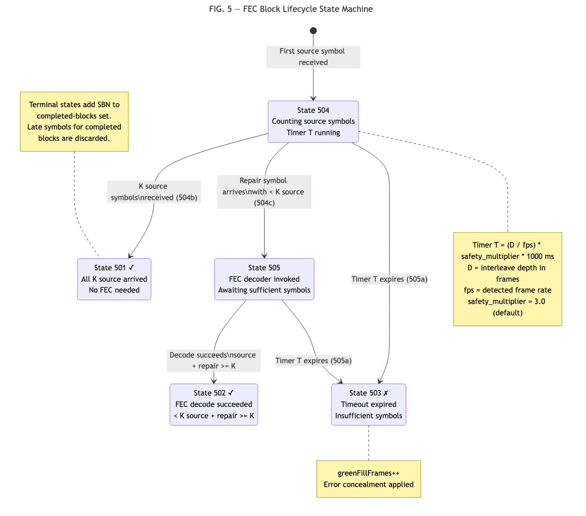

Omar Ramadan
Blockcast, Inc.
To be assigned upon USPTO submission (package finalized July 2026)
The present invention relates to forward error correction (FEC) in media streaming systems, and more particularly to methods for integrating application-layer FEC with publish/subscribe media transport protocols across heterogeneous network paths including reliable unicast, unreliable unicast, and multicast delivery.
Media over QUIC (MoQ) is an emerging IETF protocol for real-time media delivery using a publish/subscribe model over QUIC and WebTransport. In MoQ, media content is organized into broadcasts containing named tracks, where each track carries a sequence of groups, and each group contains a sequence of objects. A video track at 30 frames per second produces approximately 30 groups per second, each containing one or more objects representing coded video frames.
MoQ relays form a content distribution network where publishers send media to relays, and subscribers receive media from relays. The pub/sub model enables scalable delivery without requiring publishers to maintain per-subscriber state.
Forward Error Correction (FEC) enables receivers to recover lost packets using redundant repair data without waiting for retransmissions. RaptorQ (RFC 6330) and Reed-Solomon (RFC 5510) are widely used FEC codes. In these codes, K source symbols are encoded to produce P additional repair symbols. A receiver that obtains any K symbols from the combined K+P set can recover the original source data.
FEC is organized into source blocks, each identified by a Source Block Number (SBN). Within a block, each symbol has an Encoding Symbol ID (ESI). Source symbols have ESI values 0 through K-1; repair symbols have ESI values K through K+P-1.
MPEG Media Transport Protocol (MMTP, ISO 23008-1) is used in ATSC 3.0 and ARIB STD-B60 broadcast television. MMTP packets carry a Source FEC Payload ID (SS_ID) that identifies each source symbol with a flat 32-bit counter. The standard relationship is:
SBN = floor(SS_ID / K)
ESI = SS_ID mod KMMTP packets are delivered via multicast UDP in broadcast systems.
Existing FEC systems have the following limitations:
No transport mapping for pub/sub protocols. RFC 6330 defines the FEC algorithm but leaves the mapping from transport-layer identifiers to FEC coordinates (SBN, ESI) to the Content Delivery Protocol. No standard defines this mapping for publish/subscribe protocols where media is identified by (track, group_id, object_id) rather than flat sequence numbers.
Single-transport FEC. Prior FEC systems assume symbols are received via a single transport protocol. RFC 6363 (FEC Framework) defines source and repair flows but does not address combining symbols from heterogeneous transports. 3GPP eMBMS and ATSC 3.0 use unicast as a retry/repair channel (request-based), not as a real-time parallel delivery path whose symbols are combined with multicast symbols in the same FEC block.
No receiver-side FEC-aware transport switching. Existing multicast/unicast switching systems (e.g., US20060200576A1, US7788393B2) operate on buffer levels or duplicate frame detection, not on FEC block completeness or keyframe gating.
Unspecified receiver block management. RFC 6363 and RFC 6330 deliberately leave receiver timeout and block lifecycle behavior unspecified. No standard defines codec-aware timeout computation or block state management that accounts for media frame rate and interleave depth.
The present invention provides four interrelated methods for integrating forward error correction with publish/subscribe media transport:
A deterministic formula for deriving FEC coordinates (SBN, ESI) from publish/subscribe transport identifiers (group_id, object_id), using time-based interleave depth expressed in milliseconds.
A method for combining FEC symbols received via heterogeneous transport protocols (e.g., reliable unicast streams, unreliable unicast datagrams, multicast UDP) into unified FEC blocks using shared coordinates.
A method for hybrid multicast/unicast source arbitration with FEC-aware keyframe gating and cross-transport repair symbol injection during transport transitions.
A FEC block lifecycle state machine with three-state accounting and codec-aware dynamic timeout computation.
FIG. 1 illustrates the overall system architecture. A publisher (101) encodes media and publishes it to a pub/sub relay (102) via a unicast transport (e.g., QUIC, WebTransport, or other reliable protocol). The relay distributes media to subscribers (103, 104) via unicast. Optionally, the same media is simultaneously transmitted via SSM multicast UDP (105) to multicast-capable subscribers (103). A multicast-to-unicast gateway (106) may receive multicast and re-publish to unicast subscribers.
Each media packet exists in two coordinate spaces: - MoQ coordinates: (track_name, group_id, object_id) - FEC coordinates: (SBN, ESI), equivalently SS_ID
The invention provides a deterministic mapping between these coordinate spaces that produces identical FEC coordinates regardless of which transport delivered the packet.
FIG. 2 illustrates the ESI derivation process. Given a media object received via the publish/subscribe transport with group identifier G and object identifier O:
Step 201: The receiver obtains the interleave depth parameter from the catalog or FEC configuration, expressed in milliseconds (interleaveDepth_ms).
Step 202: The receiver computes the interleave depth in media units (groups):
D = ceil(interleaveDepth_ms / GOP_duration_ms)where GOP_duration_ms is the duration of one media group (e.g., 33.3ms for 30fps video, 21.3ms for 46.875fps audio). By expressing interleave depth in milliseconds rather than frame counts, the same catalog value produces appropriate FEC block sizes across media types with different frame rates.
Step 203: The receiver derives the Source Block Number:
SBN = floor(G / D)Step 204: The receiver derives the Encoding Symbol ID:
first_group = SBN * D
symbols_per_group = ceil(K / D)
ESI = (G - first_group) * symbols_per_group + Owhere K is the number of source symbols per FEC block.
Step 205: The flat Source Symbol ID is recoverable as:
SS_ID = SBN * K + ESIThis SS_ID is identical to the Source FEC Payload ID carried in MMTP multicast packets per ISO 23008-1 Section C.5.2.
Key Property: A receiver that obtains the same media packet via MoQ (using group_id, object_id) and via multicast UDP (using SS_ID from the FEC Payload ID) derives identical (SBN, ESI) coordinates using the respective derivation. This property enables multi-path FEC combining (Second Embodiment).
Example: For a 30fps video stream with K=32, D=4 (interleaveDepth = 133ms), a packet in Group 10, Object 3:
SBN = floor(10 / 4) = 2
first_group = 2 * 4 = 8
symbols_per_group = ceil(32 / 4) = 8
ESI = (10 - 8) * 8 + 3 = 19
SS_ID = 2 * 32 + 19 = 83A multicast receiver receiving the same packet reads SS_ID = 83 from the FEC Payload ID, and computes:
SBN = floor(83 / 32) = 2
ESI = 83 mod 32 = 19Both paths produce (SBN=2, ESI=19).
FIG. 3 illustrates the multi-path FEC combining process. A receiver (301) has access to two or more transport paths delivering the same media content: - Path A: reliable unicast stream (e.g., QUIC, TCP, WebTransport) - Path B: multicast UDP via SSM or AMT tunnel - Path C (optional): unreliable unicast datagrams (e.g., QUIC datagrams)
Step 302: For each received symbol, the receiver derives FEC coordinates (SBN, ESI) using the appropriate derivation: - From MoQ: ESI derivation formula (First Embodiment) - From multicast: SS_ID derivation (SBN = floor(SS_ID / K), ESI = SS_ID mod K)
Step 303: The receiver maintains a deduplication table keyed by (SBN, ESI) within each track. If a symbol with the same coordinates has already been received (from any path), the duplicate is discarded.
Step 304: Deduplicated symbols are inserted into a per-block FEC decoder. The decoder does not distinguish symbols by transport origin; it treats all symbols with valid (SBN, ESI) as equivalent inputs.
Step 305: When the decoder has received at least K symbols for a block (from any combination of source and repair symbols, from any combination of transport paths), it performs FEC decoding to recover any missing source symbols.
Advantages: - A receiver experiencing 10% multicast packet loss and receiving repair symbols via a reliable unicast path can achieve full recovery. - Load balancing: the receiver can accept whichever symbols arrive first from any path. - Graceful failover: if one transport path fails, symbols from the remaining path(s) continue to accumulate in the same FEC blocks.
FIG. 4 illustrates the hybrid source arbitration state machine with five states: UNICAST_ONLY (401), JOINING (402), MULTICAST_PRIMARY (403), FAILING_BACK (404), and MULTICAST_STALLED (405).
State 401 - UNICAST_ONLY: The receiver is subscribed to a MoQ track via a unicast transport. Media is received and rendered immediately. The receiver initiates a multicast group join (IGMP/MLD) in parallel. Transition to JOINING (402) upon join initiation.
State 402 - JOINING: The receiver continues rendering unicast media. Multicast packets begin arriving but may not start at a keyframe. The receiver buffers multicast packets but does NOT activate multicast rendering.
Step 402a - Keyframe Gate: Upon receiving a video Random Access Point (keyframe) via multicast, transition to MULTICAST_PRIMARY (403). This ensures the video decoder can be initialized cleanly.
Step 402b - Audio Independence: Audio multicast activation is gated on a separate timer. If audio arrives via multicast within a configurable timeout (e.g., 2 seconds), audio switches to multicast independently of video keyframe receipt.
Step 402c - Cross-Transport Repair Injection: During the JOINING state, repair symbols received via the unicast transport are injected into FEC blocks whose source symbols were received via multicast. This enables FEC recovery during the transition period when multicast reception may be lossy (e.g., due to IGMP convergence).
State 403 - MULTICAST_PRIMARY: Multicast is the primary media source. Unicast frames for the same track are suppressed. The receiver monitors multicast reception quality.
Step 403a - Hysteresis: The receiver does NOT switch away from multicast on transient loss. A sustained loss threshold (e.g., N consecutive FEC block failures) must be exceeded before transitioning to FAILING_BACK (404).
State 404 - FAILING_BACK: The receiver re-subscribes to unicast with a LatestGroup delivery preference to resynchronize to the current media position. Once unicast data arrives, transition to UNICAST_ONLY (401).
State 405 - MULTICAST_STALLED: If multicast reception degrades but does not fully fail (e.g., high loss rate but some packets arriving), the receiver may enter a stalled state where it continues attempting multicast FEC recovery while preparing unicast fallback.
FIG. 5 illustrates the per-block state machine with three terminal states: CLEAN (501), RECOVERED (502), and FAILED (503), plus two active states: ACCUMULATING (504) and DECODING (505).
State 504 - ACCUMULATING: Entered when the first source symbol for a new block is received. A timeout timer T is started.
Step 504a - Timeout Computation:
T = (D / fps) * safety_multiplier * 1000 [milliseconds]where D is the interleave depth in frames, fps is the detected media frame rate, and safety_multiplier is a configurable constant (default 3.0). This computation is performed once when the frame rate is first detected from decoder output, and the result is applied to all subsequent blocks.
Step 504b - Source Symbol Counting: Each received source symbol increments a per-block counter. When the counter reaches K, the block transitions to CLEAN (501) — all source symbols arrived, no FEC decoding is necessary.
Step 504c - Repair Symbol Receipt: When a repair symbol arrives for a block in ACCUMULATING state with fewer than K source symbols, the block transitions to DECODING (505).
State 505 - DECODING: The FEC decoder is invoked with all available symbols (source + repair). If the decoder succeeds (total symbols >= K), transition to RECOVERED (502). If the decoder does not yet have sufficient symbols, remain in DECODING.
Step 505a - Timeout Expiry: If timer T expires in either ACCUMULATING or DECODING state, the block transitions to FAILED (503). A green-fill frame or error concealment is applied.
Terminal States:
State 501 - CLEAN: All K source symbols received. No
FEC overhead incurred. Block statistics counter blocksClean
is incremented.
State 502 - RECOVERED: FEC decoding succeeded with
fewer than K source symbols. Counter blocksRecovered is
incremented.
State 503 - FAILED: Timeout expired with
insufficient symbols. Counter blocksFailed is incremented.
Counter greenFillFrames is incremented.
Completed-Block Guard: Upon entering any terminal state (CLEAN, RECOVERED, or FAILED), the block’s SBN is added to a bounded completed-blocks set. Subsequent symbols arriving for a completed block are discarded without restarting timers or re-entering the state machine. The completed-blocks set uses insertion-order eviction, retaining the most recent N entries (e.g., N=500) to prevent unbounded memory growth.
Per-Track Decoder Routing: The state machine is instantiated per media track, keyed by track identifier (e.g., MMTP packet_id). Each track has independent K, timeout parameters, and block state. This enables different FEC configurations per media type: video may use K=32 with 133ms interleave while audio uses K=4 with 40ms interleave.
A method for forward error correction in a publish/subscribe media transport system, comprising:
receiving a media object identified by a group identifier G and an object identifier O within a named track of a publish/subscribe media session;
obtaining a time-based interleave depth parameter expressed in milliseconds from a catalog document or control message;
computing an interleave depth D in media units from said millisecond parameter and a media frame duration;
deriving a Source Block Number SBN equal to the floor of G divided by D;
deriving an Encoding Symbol ID ESI equal to the quantity (G minus the product of SBN and D) multiplied by the ceiling of K divided by D, plus O, where K is the number of source symbols per FEC block;
using said SBN and ESI to identify the position of said media object within a FEC block for encoding or decoding;
wherein a flat Source Symbol ID SS_ID equal to the product of SBN and K plus ESI is derivable from said SBN and ESI, and said SS_ID is identical to a Source FEC Payload ID carried in multicast transport packets for the same media content, enabling a receiver to assign symbols received via the publish/subscribe transport and symbols received via multicast transport to the same FEC block.
The method of Claim 1, wherein the interleave depth parameter is expressed in milliseconds in the catalog document, and the receiver converts to media units using a detected frame duration, making the FEC block mapping independent of the media frame rate.
The method of Claim 1, wherein a relay node performs said derivation to translate between a multicast transport carrying said SS_ID and a publish/subscribe transport carrying said group identifier and object identifier, bridging FEC coordinates between transport domains without modifying the underlying FEC block structure.
The method of Claim 1, wherein the same derivation is performed independently at multiple receivers, each producing identical SBN and ESI values for the same media object regardless of which transport path delivered it.
A method for recovering media data in a streaming system, comprising:
receiving one or more source symbols via a first transport protocol;
receiving one or more repair symbols via a second transport protocol different from said first transport protocol;
for each received symbol, deriving FEC coordinates comprising a Source Block Number and an Encoding Symbol ID, wherein said coordinates are identical for the same media content regardless of which transport protocol delivered the symbol;
deduplicating symbols received via multiple transport paths using said FEC coordinates as a uniqueness key;
inserting deduplicated source and repair symbols from said different transport protocols into a single FEC decoder instance for the corresponding source block;
performing FEC decoding on said combined symbols when the total count of received symbols meets or exceeds K, recovering any missing source symbols.
The method of Claim 5, wherein source symbols are received via multicast UDP and repair symbols are received via a reliable unicast transport (e.g., QUIC or TCP), enabling FEC recovery where the unreliable multicast path provides bulk source data and the reliable unicast path provides targeted repair.
The method of Claim 5, wherein a receiver dynamically switches its primary source from one transport protocol to another while maintaining FEC block continuity, such that symbols received before and after the switch contribute to the same FEC block.
The method of Claim 5, wherein deriving FEC coordinates for symbols received via the publish/subscribe transport uses the method of Claim 1.
A method for media reception in a hybrid delivery system, comprising:
subscribing to a media track via a unicast publish/subscribe transport;
simultaneously initiating a multicast group join for the same media content;
receiving and rendering media from the unicast transport during a multicast join period;
upon receiving a random access point via the multicast transport, activating multicast as a primary media source and suppressing duplicate frames from the unicast transport;
during a transition period between unicast and multicast primary sources, injecting FEC repair symbols received from the unicast transport into FEC blocks whose source symbols were received from the multicast transport;
applying hysteresis to a transport switching decision, requiring sustained loss exceeding a threshold before switching away from multicast;
upon detecting sustained multicast failure, re-subscribing to unicast with a delivery preference that resynchronizes to a current media position.
The method of Claim 9, wherein audio multicast activation is gated on a timer independent of video random access point receipt, enabling audio to activate via multicast before video has received a keyframe.
The method of Claim 9, wherein said FEC repair symbol injection uses FEC coordinates derived according to the method of Claim 1, ensuring symbols from both transport paths are correctly assigned to the same FEC block.
The method of Claim 9, wherein a FEC block lifecycle state machine tracks block completeness across both transport paths, and determines when to attempt FEC recovery based on combined symbol counts from both transports.
A method for managing forward error correction decoding in a media receiver, comprising:
maintaining a per-block state with three mutually exclusive terminal outcomes: clean, indicating all K source symbols were received; recovered, indicating FEC decoding with repair symbols succeeded; and failed, indicating a timeout expired with insufficient symbols;
starting a block timeout upon receipt of a first source symbol for a block;
computing said timeout as a function of an interleave depth in frames, a detected media frame rate, and a safety multiplier;
transitioning a block to the clean state when K source symbols are received before said timeout;
attempting FEC decoding when repair symbols are received for a block with fewer than K source symbols;
transitioning a block to the failed state when said timeout expires with fewer than K total symbols;
maintaining a completed-blocks set and discarding symbols that arrive for blocks already in a terminal state, preventing late-arriving symbols from restarting timeouts or triggering redundant decoding.
The method of Claim 13, further comprising refining the timeout computation when the frame rate is first detected from decoder output, and propagating said refined timeout to active decoder instances.
The method of Claim 13, further comprising maintaining per-track FEC decoder instances keyed by media track identifier, each with independent K value, timeout parameter, and block state, enabling different FEC configurations per media type within the same session.
The method of Claim 13, further comprising exposing counters for blocks in each terminal state as real-time statistics for adaptive quality monitoring.
The method of Claim 13, wherein the completed-blocks set is bounded using insertion-order eviction, retaining a most recent N entries.
A method for integrating forward error correction (FEC) with publish/subscribe media transport protocols. A deterministic formula maps publish/subscribe transport identifiers (group_id, object_id) to FEC encoding coordinates (Source Block Number, Encoding Symbol ID) using time-based interleave depth, producing coordinates identical to those carried in multicast transport packets for the same content. This enables real-time combining of FEC symbols received via heterogeneous transport protocols — including reliable unicast streams, unreliable unicast datagrams, and multicast UDP — into unified FEC blocks. A hybrid source arbitration method switches between multicast and unicast delivery with FEC-aware keyframe gating and cross-transport repair symbol injection. A block lifecycle state machine with three terminal states (clean, recovered, failed) and codec-aware dynamic timeout manages FEC decoding with per-track routing.
FIG. 1: System architecture showing publisher, MoQ relay, unicast subscribers, multicast path, and multicast-to-unicast gateway with dual coordinate spaces (MoQ and FEC).

FIG. 2: ESI derivation flowchart: input (G, O, interleaveDepth_ms, K, GOP_duration_ms) through computation steps producing (SBN, ESI, SS_ID).

FIG. 3: Multi-path FEC combining: two transport paths delivering symbols to a shared deduplication table and FEC decoder, with coordinate derivation per path.

FIG. 4: Hybrid source arbitration state machine with five states (UNICAST_ONLY, JOINING, MULTICAST_PRIMARY, FAILING_BACK, MULTICAST_STALLED) and transition conditions.

FIG. 5: FEC block lifecycle state machine with states (ACCUMULATING, DECODING) and terminal states (CLEAN, RECOVERED, FAILED), showing timeout computation and completed-block guard.
